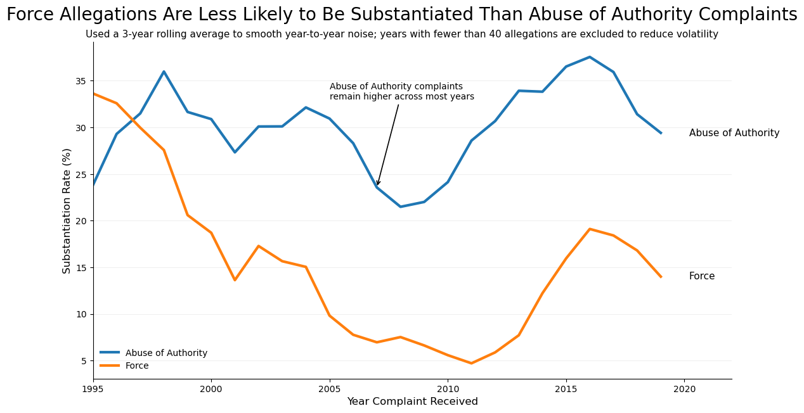

Proposition: In CCRB complaint data, force-related allegations are less likely to be substantiated than abuse of authority allegations.
FOR the Proposition
"Force-related allegations have substantially lower substantiation rates compared to abuse of authority allegations, suggesting they are less likely to be validated by the CCRB."

Design Decisions and Rationale:
- Use of a 3-year rolling average and filtering low-count years (Score: +1.5). We applied a 3-year rolling average to smooth out year-to-year fluctuations and excluded years with fewer than 40 allegations in either category. This transformation reduces noise caused by small sample sizes and makes the overall trend easier to interpret. While this is a standard and reasonable data transformation, it also subtly strengthens the argument by emphasizing consistent patterns over variability. We considered using raw yearly values, but they appeared noisy and made the comparison less clear, so we chose smoothing to highlight the broader trend.
- Framing the visualization around substantiation rates (percentages) (Score: +1). The visualization uses substantiation rates rather than raw counts to compare Force and Abuse of Authority allegations. This is appropriate because the proposition focuses on the likelihood of substantiation. However, this choice also frames the narrative toward the argument by ignoring total volume, which could lead to a different interpretation. We considered including counts as a secondary axis, but omitted them to maintain a focused comparison that supports the proposition.
- Strong/assertive title framing the conclusion (Score: -0.5). The title explicitly states that Force allegations are "less likely to be substantiated," which interprets the data for the viewer rather than presenting it neutrally. This makes the visualization more persuasive by guiding the reader toward a specific conclusion before fully examining the chart. We considered a more neutral title (e.g., "Substantiation Rates Over Time"), but chose a stronger statement to align with the goal of persuasion.
- Use of annotation to guide interpretation of the trend (Score: -0.5). The annotation highlights that Abuse of Authority complaints "remain higher across most years," directing attention to the consistent gap between the two lines. This helps the viewer quickly understand the intended takeaway without needing to interpret the entire time series. While helpful, this annotation selectively emphasizes one interpretation and downplays variability or exceptions. We considered removing the annotation, but kept it to reinforce the narrative clearly.
- Direct labeling of lines instead of relying solely on the legend (Score: +2). Placing labels ("Force" and "Abuse of Authority") directly at the end of each line reduces cognitive load and allows the viewer to quickly associate each line with its category. This improves readability and eliminates the need to repeatedly reference the legend. This design choice does not distort the data and is a widely accepted best practice for clarity. We considered using only a legend, but direct labeling made the chart easier to interpret at a glance.
AGAINST the Proposition
"The claim that force-related allegations are less likely to be substantiated is misleading; when considering total substantiated cases and broader context, force allegations still represent a significant portion of validated complaints."

Design Decisions and Rationale:
- Absolute counts over rates (Score: -1). Emphasizing raw counts of substantiated cases over rate of substantiated cases shifts the comparison from how often to how many. This shifts the narrative of the initial proposition, which is initially about rates rather than counts. A viewer may then shift their perspective to put force on par with abuse of authority in terms of significance.
- Including a Total bar (Score: 0.5). Placing force next to the overall total of substantiated cases makes force look like a meaningful portion of complaints without explicitly clarifying most of that total comes from abuse of authority. This inflates the significance of the force count to the viewer.
- Direct value labels (Score: 0). The direct labeling of the bars puts more emphasis on the amount of each case, rather than the rates of each type of case.
- Distinct accent color for the Force bar (Score: 0). Using a bright red for the force bar draws the viewer's attention to it specifically without misrepresenting the data. Additionally, red is associated with negative emotions, which adds to a sense of outrage to the viewer when viewing the statistics about the number of substantiated cases.
Final Reflection
For the supporting line graph, it was pretty straightforward to identify the overall trend after grouping the data by year and FADO type and create a persuasive narrative through the visualization. This is largely due to the naturally apparent gap between the two aggregated groups making it easy to create and support the proposition that force allegations are less likely to be substantiated, as the difference over time in percentage substantiated appears to grow in size. On the other hand, it was difficult to balance the clarity and persuasion of the visualization without making it seem too biased because of how apparent the trend was. For instance, showing the graph with different titles to friends evoked extremely different reactions, which was surprising to see the impact that small design choices, like annotation placement or the title wording, could have upon the visualization’s effectiveness in communicating the message we wished to convey.
For the opposing bar graph, coming up with the visualization idea was difficult because it reframes the proposition, rather than directly countering it. However, it allowed for more freedom in how to express the data. Coming up with how to put more emphasis on the important data was straightforward, since it was a matter of picking which metric of central tendency to express the data in, the colors of the graph, and the placement of each bar. Similar to the supporting line graph, it was surprising to see the impact of small design choices when presenting the graphs to unrelated individuals.
We define ethical analysis and visualization by three main ideas: the preservation of statistical integrity of data used; effective and honest communication of any uncertainties or limitations the graph presents; and the avoidance of any design or analytical choices that could cause a viewer to come to false conclusions. These ideas represent transparency and accuracy in analysis and visualization, core parts of ethics to educate viewers so as to not mislead them. Stringent bounds between “acceptable” persuasive choices vs. “misleading” ones mainly boil down to if the choice is likely to mislead the audience to a conclusion that doesn’t fully represent the analyzed data. Examples of this include omitting data that would have significant impacts upon conclusions and including confusing aspects in the visualizations that could lead viewers to false conclusions.